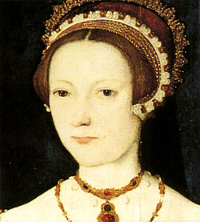

ĐÔI mắt to, cái mũi to, lông mày rậm, bà Hoàng hậu thứ sáu đã góa một đời chồng lúc 16 tuổi, đến 30 tuổi lại góa một lần thứ hai.
Năm 1533, bà tái giá với Henri VIII. Lần này, nhàvua đã chán ngán về cái tiếng đồn “Râu Xanh” của toàn dân gán cho ông, ông nhất định sống yên ổn để dưỡng tuổi già với bà vợ cuối cùng. Bà này hết sức chiêu chuộng vua, và dĩ vãng, cũng như hiện tại, không tố cáo nàng một tội ác nào được. Nhà vua cũng hoàn toàn thỏa mãn với người vợ lớn tuổi đã có nhiều kinh nghiệm.

Bỗng một hôm, trong một cuộc đàm luận về tôn giáo, nhà vua nói về Thánh Thể của Chúa thì Catherine mỉm cười, tỏ ý không tin. Tức thì, hôm sau, có kẻ đâm thọc với vua: “Hoàng hậu phải là một kẻ tà đạo mới có ý chống báng giáo điều của Chúa”.
Henri VIII ngẩm nghĩ gật đầu: “Ừ, tà đạo... tà đạo... phải bắt giam hoàng hậu để tra tấn... rồi chặt đầu…”
Nhưng Catherine Paar khóc lóc quỳ xuống van lơn vua: “Thần thiếp chỉ muốn học hỏi nơi triết lý cao siêu của Hoàng thượng...”
Lúc bấy giờ nhà vua đã ốm yếu, bị bại, không đi được, rồi một đêm, gần 1 giờ sáng, gương mặt vua bỗng đổi ra màu tím bầm. Vua trợn mắt, trào máu ra miệng, chết không trối được một lời.